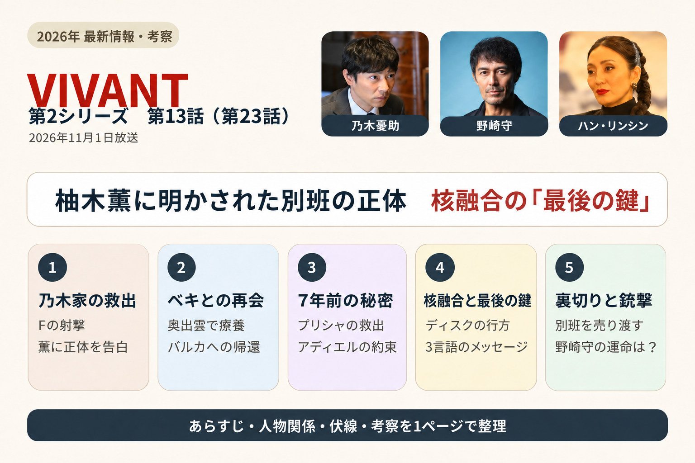
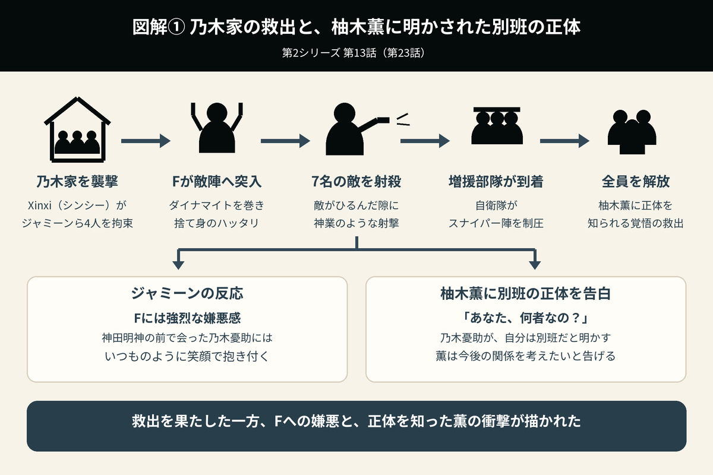
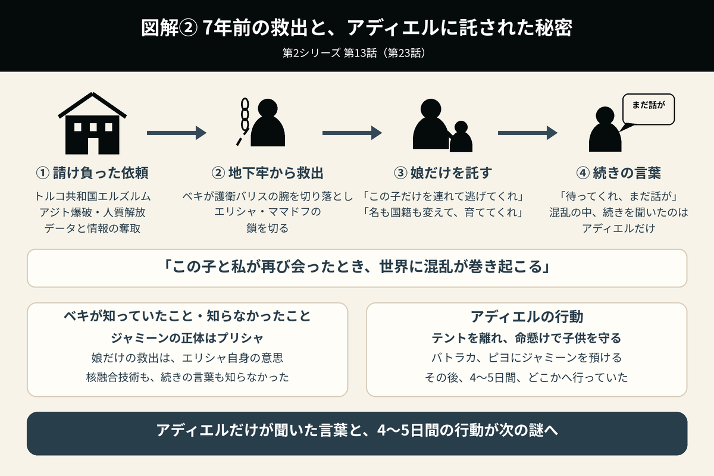
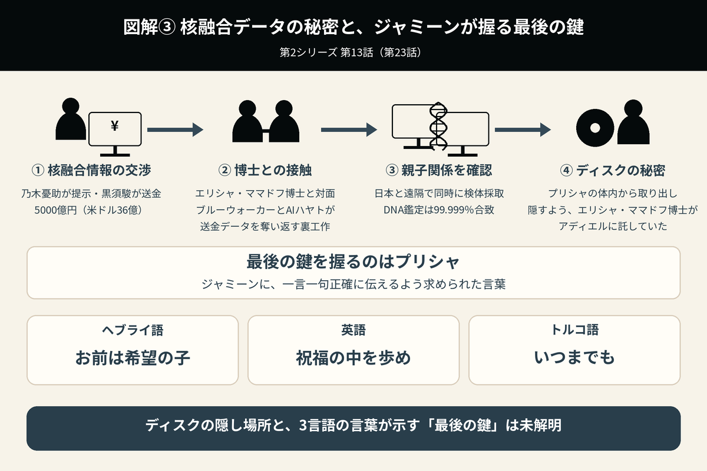

柚木薫に明かされた別班の正体
核融合の秘密と、ジャミーンが握る「最後の鍵」
最終話直前となる第23話。乃木憂助は、柚木薫に別班であることを知られる覚悟で、乃木家に拘束された仲間の救出に向かいます。父ノゴーン・ベキとの再会では、7年前にジャミーンだけを救出した理由と、アディエルに託された秘密が明らかに。さらに、エリシャ・ママドフ博士との接触によって、核融合データと「最後の鍵」を巡る謎が核心へ近づく一方、タイラン・グリエワの裏切りと野崎守への銃撃が、新たな危機をもたらします。

1. 乃木家への救出作戦――Fの射撃と、柚木薫に明かされた別班の正体
第22話のラストで、主人公・乃木憂助とノコル、チンギスは、宿敵Xinxi（シンシー）から、核融合研究者エリシャ・ママドフの娘プリシャとされるジャミーンを保護するため、日本へ急行する。
責任者の樊林杏（ハン・リンシン）は乃木家を襲撃し、ジャミーンや柚木薫、ノコル、チンギスらを拘束した。
第23話は、乃木憂助が意を決して、彼女たちの救出に向かうシーンから始まる。今、乃木家に向かえば、薫に自分が別班であることを知られてしまう状況だった。
身体にダイナマイトを巻き付け、両手を挙げたままFに変わって敵陣へ乗り込んだ乃木は、自分に何かあれば全員を巻き添えにして爆破すると言い放つ。敵の動揺を誘う、捨て身のハッタリだった。
Xinxi（シンシー）の工作員が一瞬ひるんだ隙を見逃さず、Fは神業のような凄まじい射撃精度で、一気に7名の敵を射殺する。そして、スナイパーに向けて親指を上げた。
鳥取G7サミットから駆け付けた自衛隊の増援部隊・一個隊が、スナイパー陣も瞬く間に制圧した。ギリギリのところで、増援部隊・一個隊が間に合ったのだ。
敵兵を制圧した後のFを見て、拘束されていたジャミーンが、突然、強烈な嫌悪感を示した。
一方、その後、神田明神の前で会った乃木憂助には、いつものように笑顔で抱き付いた。
ジャミーンの善悪判断では、Fが「悪」と判別されることが明らかになったシーンである。
乃木憂助は全員を解放し、その後、柚木薫と二人きりになって、丁寧に説明する。
柚木薫は、後ずさりしながら叫んだ。
予告シーンで配信されていた場面の意味が、明らかになった瞬間だった。
乃木憂助は答える。
第1シリーズの回想シーンで交わされたやり取りを思い出しながら、薫は「本当に別班だったの」と口にする。
憂助は説明する。
こうしたやり取りの後も、さらに丁寧な説明が続いた。
あまりのショックに、薫は告げる。
目の前で人が殺される場面を目にしたら、それが自分たちを守るためだと理解しても、簡単には受け入れられないだろう。
乃木との関係を考え直したいという言葉は、薫なりの誠実さといえる。
別班は非公式の組織であり、その任務は極秘事項である。
第1シリーズの車内の回想シーンでは、野崎守の「別班であることを漏らせば、命の保証はありません」という台詞もあった。
神社でノコルが口にした「つらいな、別班は」という一言には、実感がこもっていた。
薫との関係は、薫の一存に委ねられることになった。

2. 奥出雲でノゴーン・ベキと再会――父を生かした理由と、バルカへの帰還
乃木憂助は、療養中の父ノゴーン・ベキに会うため、島根県奥出雲町にある、築300年以上の乃木家の実家へ向かう。
出迎えた乃木寛道は、娘が「河野組」に嫁いでおり、乃木家の古くなった「奥の蔵」を解体していると説明した。
第23話では、伯父・乃木寛道の娘・玲役が登場した。
乃木寛道は、野崎守からホテルニューオータニの1544号室に呼び出された際の会話を説明する。
弟の乃木卓が生きていること。さらに、乃木憂助が別班であり、そのことをしゃべれば命の保証はないことを告げられていた。
ノコルが「どうやって運んだんですか」と尋ねると、車で運び、野崎さんのお兄さんも同行してくれたという。
当家には、歴代の当主の写真が額に入れて飾られていた。
乃木寛道は、ノコルを「甥」だと言ってくれた。
そこでベキ、バトラカ、ピヨとの久々の再会を果たすが、その場には重苦しい空気が漂う。
チンギスは相変わらず、最大の敬意を込めてひれ伏し、対面した。
ベキは開口一番、息子である憂助に問い掛ける。
すると、隣にいたバトラカも続けた。
乃木憂助が「分かっています」と答えると、ベキはさらに「ならば、なぜ助けた」と問い詰める。
これに対し、憂助は訴えた。
さらに、孤児院の運営も抱えています。ノゴーン・ベキの息子としてではなく、一人の商社マンとして申し上げます。
この事業は、ノコル一人ではいずれ破綻します」
今はアリや新庄が参謀として支えているが、それでも人手不足だった。
チンギスもまた、幼い頃にベキから掛けられた言葉が、どれほど自分の勇気になっていたかを語る。
ベキは、チンギスに「あなたのことは覚えている」と答えた。
憂助は、ノゴーン・ベキ、バトラカ、ピヨの助けが必要だと伝え、新しい名前とパスポートを手渡す。
ノゴーン・ベキは、乃木寛道に告げた。
乃木寛道もここまでは会話に同席していたが、ここからは国家機密に関わる話となるため、席を外してもらうことになった。
3. 7年前の救出の真相――プリシャを託されたベキと、アディエルだけが知る言葉
憂助がノゴーン・ベキに写真を見せると、ベキはエリシャ・ママドフ博士だと答え、7年前のことを語り始めた。
そして憂助は、ジャミーンの正体がプリシャであるという確証を、父ノゴーン・ベキから得た。
ノゴーン・ベキたちが請け負った依頼は、トルコ共和国エルズルムにある組織の建物・アジトの爆破、地下牢の人質の解放、そしてタイラン・グリエワが商売にしていたデータと情報の奪取だった。
ただし、ベキは、エリシャが核融合技術に関わっていることを知らなかった。
牢屋の護衛の名はバリス。ベキはその腕を切り落とし、吊るされていたエリシャ・ママドフの鎖を切った。
プリシャを引き離したのは、エリシャ自身の意思だった。
ベキは、そう頼まれた。
エリシャは、さらにこう語った。
エリシャがジャミーンを引き離したのは、一緒にいることで起きる事態を防ぐためだった。
プリシャを極秘で育ててほしいとベキに頼んだ父エリシャ博士は、続けて呼び止める。
その後、現場は混乱し、続きの話を聞いていたのはアディエルだけだった。
ベキは後に、アディエルだけが聞いたエリシャの言葉について尋ねた。しかし、アディエルが話すことはなく、内容を知らないままだった。
7年前、ベキとアディエルがジャミーンだけを救出したこと。そして、エリシャがアディエルだけに伝えていたメッセージ。その二つには、謎が残されていた。
基地に帰ってきた直後、アディエルはベキに申し出た。
そう言われ、嘘ではないと思ったからこそ、命懸けで守らなければならないと考えたのだという。
その後、アディエルは4～5日間、バトラカ、ピヨにジャミーンを預け、どこかへ行っていた。
憂助はベキに語った。

4. 出雲大社で流した涙――柚木薫から届いた、愛を伝えるメッセージ
その後、乃木憂助とベキ達は、島根・出雲の地で縁結びの神様がまつられている出雲大社に足を運んだ。
乃木は5分以上も祈り続け、同行者からツッコミを受ける。
チンギスは、そう説明した。
その後、テントのメンバーで記念撮影をする場面で、乃木はスマホをのぞき込む。
すると、突然、膝から崩れ落ち、号泣した。薫からメッセージが届いていたのだ。
ノコルがスマホを確認させてもらうと、そこには、こう記されていた。
でも、よく分かりました。私はあなたを愛しています。
仕事が終わったら、すぐに帰ってきてくださいね。ジャミーンと帰りを待っています。
薫」
予告シーンで配信されていた場面の意味が、明らかになった瞬間だった。
あの涙は、幸せな涙だったのだ。予告で見せられていた号泣の場面が、このシーンだったことが判明した。
誰かが消えるわけでもなく、薫さんと復縁できたことによる嬉し泣きだった。
良い意味で予想を裏切られる、ほっこりするシーンであった。
5. 核融合情報を巡る5000億円の交渉――エリシャ・ママドフ博士と「最後の鍵」
司令官・櫻井里美は、乃木憂助を問い詰める。
乃木憂助は、ジャミーンがこちらの手にある以上、核融合の情報を手に入れに行きたいと、許可を申請する。
アディエルがエリシャ・ママドフ博士から託されたメッセージを探るには、タイラン・グリエワの屋敷にいるエリシャ・ママドフ博士との接触を試みる必要があった。
黒須駿の同行許可に加え、ブルーウォーカー・太田梨歩と警視庁サイバー犯罪対策課・東条翔太の滞在を、さらに延長する許可も取り付けた。
乃木憂助は、ジャミーンの所在を把握していることを盾に、アゼルバイジャンのタイランと直接交渉する。
黒須駿とタイラン邸に乗り込み、中国の裏組織Xinxi（シンシー）側とも対面した。傍らには、拘束されている野崎守がいた。
乃木は、ドラムが生きており、ジャミーンの秘密も把握したと告げる。
作戦は、Xinxi（シンシー）を上回る、日本円で5000億円（米ドル36億）規模の莫大な資金を提示し、核融合情報を買い取るというものだった。
黒須は、ジュネーブセントラルバンクの口座番号CH479522に振り込む。
ブルーウォーカーとAIハヤトの連携によって、送金データを奪い返す裏工作も成功させた。
そして乃木は、ついにエリシャ・ママドフ博士本人との接触を果たす。
乃木憂助は、親子であることを証明するため、日本と遠隔でつなぎ、DNA採取を同時に確認することを提案した。
双方で口腔粘膜を採取し、検体を鑑定する。鑑定結果は99.999％の合致を示し、親子であることが証明された。
画面越しに、エリシャに画像を見せる。
乃木はエリシャ・ママドフ博士に、若い侍が育ててくれたこと、その侍が事故で亡くなったことを説明した。
プリシャは今、ジャミーンと名乗り、僕の婚約者と一緒に育てていると告げる。
そして、自分は「もう一人の侍の息子」だと語った。
エリシャは乃木憂助に、アディエルとの会話の内容を伝える。
7年前、プリシャの身の安全を守るため、エリシャ・ママドフ博士はアディエルに対し、娘のお尻に埋め込んだ核融合データのディスクを取り出し、誰にも見つからない場所へ隠すよう話していた。
人類の命運を左右する情報が、ジャミーンの体内に埋め込まれていたことは予想外だった。その情報も、アディエルによって隠されていた。
エリシャは、ベキにも言わないよう求めていた。
エリシャは、そう語った。
そう言い、小声で続ける。
どんなに優秀でも、孤独な者には越えられない。苦境を共にする仲間が必要となる。
その時間との戦いに勝利したとき、真実の扉は開かれる」
そして、最後の鍵を握るのはプリシャだという。
エリシャは、ジャミーンに一言一句正確に伝えるよう、文言を明かした。
その言葉は、「（ヘブライ語）お前は希望の子」「（英語）祝福の中を歩め」「（トルコ語）いつまでも」という、3言語によるものだった。
ジャミーンには、人の善悪を見抜く特殊能力がある。だが、この奇跡の少女には、別の特殊能力もあるのだろうか。
第1シーズン第1話には、危険予知能力があるかのような、謎の描写もあった。
エリシャ博士は、核融合発明のデータを解き明かす「最後の鍵」を、当時2歳だったジャミーンに記憶させているのだろうか。
乃木がエリシャ・ママドフ博士から伝えられたのは、ある種の啓示、あるいは預言ともいえるだろう。
ヘブライ語、英語、トルコ語を組み合わせた暗号のようなメッセージを、乃木は脳の神経回路に刻んだ。
エリシャ博士は、当時2歳だったジャミーンに、3言語の言葉に反応するよう、発明を解く「最後の鍵」を教えたのだろうか。
それは、ディスクの暗号を解除するための、生体認証パスワード機能を示しているのだろうか。
ジャミーンが保有する核融合のデータと、その意味を理解するエリシャ自身を引き合わせないことで、技術の流出・悪用を防ぐ意図があったのかもしれない。
乃木憂助は最後に、エリシャ博士に語った。

6. 盗聴されていた会話――核融合データのディスクは、どこに隠されたのか
黒須は監視カメラにテープを貼り、盗聴器を壊して、情報漏洩を防ごうとしていた。
しかし、その努力もむなしく、エリシャとの会話は、樊林杏（ハン・リンシン）と劉銘軒（リュウ・ミンシュエン）に聞かれていた。
タイランは、情報を日本側に売った後で、別班員である乃木と黒須をXinxi（シンシー）に売り渡そうとする。その腹黒さを見せつけた。
ただし、本当に重要な部分は聞かれておらず、ここではエリシャの周到さが上回った。
劉銘軒（リュウ・ミンシュエン）は乃木に、ジャミーンのお尻に5cmほどの傷があることを、遠隔で確認させる。
人間の善悪を見抜くジャミーンが、真実を明かす相手を見極めるのだろうか。
アディエルがプリシャのお尻から摘出したとされる、核融合データのディスク。その隠し場所は、どこなのだろうか。
幼いジャミーンが、第1シーズンの初登場時から片時も離さず、大切に抱きしめていた「羊のぬいぐるみ」。その中こそが、真のディスクの隠し場所なのだろうか。
7. 別班を売り渡したタイラン・グリエワ――劉銘軒（リュウ・ミンシュエン）が野崎守を銃撃
タイラン・グリエワは、Xinxi（シンシー）に別班を高値で売り渡そうと、取引を持ち掛けていた。
そして、1億元で別班を売り渡す取引が成立した。
Xinxi（シンシー）の諜報員・劉銘軒（リュウ・ミンシュエン）は、拘束された乃木と相棒の黒須の前で、核融合の情報を聞いていた野崎守を銃撃する。
野崎守は、和田貢を殺害した実行犯ではない。しかし、シンシーへの潜入をもくろんで画策し、別班を売り、和田貢が殺害される原因を作った張本人である。
死をもって償うべき重罪を負った人物だと考える。生きていようが、ここで死のうが、結末はどちらでもよい。
新庄のように、画策によって生き長らえる物語は不要だと考えるが、それでも生きていそうではある。
ドラムを逃がし、劉銘軒（リュウ・ミンシュエン）に「俺を殺してくれ」と頼んだ可能性もある。
罪を償うという意味でも、ここで最期を迎える方が、すんなりと納得できる。
8. 次回・最終話第24話のあらすじ・予告映像――「最後の宿命」と「想像を超える結末」
第2シーズンは、次回、最終話を迎える。
映画化は実現するのだろうか。個人的には、ドラマで完結してほしいと思う。
最終話の予告編は、これまでオンエアされた第2シーズンの映像で構成されている。
映像終盤には、金色に輝くハヤト部屋、広大なバルカの砂漠、エリシャの手を握る乃木の姿など、最終話のヒントになりそうなシーンも登場する。
主演の堺は、第23話終了直前に放送されたメッセージ映像で、こう語っている。
「みなさまの期待を裏切らない結末を用意しております」
9. 残された伏線が、さらなる謎を呼ぶ
毛じいさん
野崎に電光掲示板でシャキ城の情報を教えていたのは、「毛じいさん」という、北京時代からの協力者であることが分かった。
しかし、その後の謎解きは、まだ描かれていない。
劉銘軒（リュウ・ミンシュエン）が乃木憂助に似すぎている件
5歳から日本で育ったと話している。また、第19話では、日本で生まれたことも判明した。
乃木憂助は、乃木卓が公安警察の身分を隠し、妻の明美とバルカへ渡った後、現地で誕生している。
双子であることを示す伏線はないため、何らかの血縁関係があるのではないかと推測される。
ヘブライ語を話す諜報員風の男
第13話のラストでは、エルサレムに密航した野崎が、遺跡のような場所で、ヘブライ語を話す諜報員風の男と密会した。
第14話で、その男は野崎に「ボスに会ってもらう」と告げる。
その後、野崎が樊林杏（ハン・リンシン）と会食する場面へとつながったため、Xinxi（シンシー）の部下だと思われた。
野崎は、この諜報員風の男に、ブルーウォーカーが別班に付いたことを教えていた。しかし、その情報は、どうもXinxi（シンシー）本部で把握されていないように見える。
Xinxi（シンシー）の部下ではないのだとすれば、さらに謎を呼ぶことになる。
G7鳥取サミット
生存していたノゴーン・ベキは、隣県の奥出雲で療養していた。そのため、G7鳥取サミットが今後の物語に関わる伏線だという見方もできる。
世界的な案件である、エリシャ・ママドフ博士の核融合発明。その解決に、G7が関わるのだろうか。
第23話で新たに分かったこと
| 乃木家への救出 | Fが7名の敵を射殺し、自衛隊の増援部隊がスナイパー陣を制圧。ジャミーン、柚木薫、ノコル、チンギスらは解放された。 |
|---|---|
| ジャミーンの反応 | Fには強い嫌悪感を示す一方、乃木憂助には笑顔で抱き付いた。両者に対する反応の違いが描かれた。 |
| 柚木薫との関係 | 乃木憂助が別班であることを告白。薫は一度、関係を考え直したいと告げたが、その後、愛情と帰りを待つ気持ちをメッセージで伝えた。 |
| ノゴーン・ベキたちの帰還 | 憂助がノゴーン・ベキ、バトラカ、ピヨに新しい名前とパスポートを渡した。ノゴーン・ベキは、バルカに戻る意思を示した。 |
| ジャミーンの正体 | ノゴーン・ベキの証言によって、ジャミーンがプリシャであるという確証を得た。さらに、エリシャ・ママドフ博士とのDNA鑑定でも親子関係が証明された。 |
| 7年前に娘だけを救った理由 | エリシャ自身が、娘だけを連れて逃げ、名前と国籍を変えて育てるよう頼んでいた。父娘が再会すると、世界に混乱が巻き起こるとも語っていた。 |
| アディエルに託された秘密 | プリシャのお尻に埋め込まれた核融合データのディスクを取り出し、誰にも見つからない場所へ隠すよう、エリシャ・ママドフ博士が託していた。 |
| 核融合情報を巡る交渉 | 乃木憂助は5000億円（米ドル36億）規模の資金を提示し、エリシャ・ママドフ博士との接触に成功。ブルーウォーカーとAIハヤトは、送金データを奪い返す裏工作を行った。 |
| 最後の鍵 | エリシャは、最後の鍵を握るのはプリシャだと説明。「（ヘブライ語）お前は希望の子」「（英語）祝福の中を歩め」「（トルコ語）いつまでも」を、一言一句正確に伝えるよう求めた。 |
| タイランの裏切りと野崎守への銃撃 | タイラン・グリエワは、1億元で別班をXinxi（シンシー）に売り渡した。拘束された乃木と黒須の前で、劉銘軒（リュウ・ミンシュエン）が野崎守を銃撃した。 |
第23話の見どころ
第23話は、乃木家での救出から始まり、ノゴーン・ベキとの再会、7年前の救出の真相、核融合情報を巡る交渉へと、最終話に向けて物語が大きく動く回だった。
冒頭では、乃木憂助が柚木薫に正体を知られる危険を承知で救出に向かい、Fの圧倒的な射撃によって危機を切り抜けた。しかし、命が救われても、薫が目の前で受けた衝撃まで消えるわけではない。日本を守る別班としての使命と、愛する人と共に生きたいという願い。その両立の難しさが描かれた。
ジャミーンがFには嫌悪感を示し、乃木憂助には笑顔で抱き付いた場面も印象に残る。人の善悪を見抜く力が、エリシャの語る「最後の鍵」とどう関わるのか。最終話を前に、新たな注目点となった。
奥出雲での再会では、憂助が父を生かした理由を「バルカの民のため」と説明した。息子としての感情だけでなく、一人の商社マンとして、ノコルだけでは事業を支え切れないと訴える。その言葉は、ノゴーン・ベキに、再び生きて果たすべき役割を示すものだった。
一方、出雲大社での号泣が、薫からのメッセージを読んだ嬉し泣きだったことには、良い意味で予想を裏切られた。誰かとの別れを思わせた予告の場面が、愛する人とのつながりを取り戻す場面だったことに、ほっとさせられる。
核融合を巡る謎は、エリシャ・ママドフ博士との対面によって核心へ近づいた。娘だけを救わせた理由、アディエルだけに託された秘密、体内に埋め込まれていたディスクがつながり、次の焦点は「ディスクの隠し場所」と「最後の鍵」へ移っている。
3言語の言葉は、当時2歳だったジャミーンの記憶に働き掛けるものなのか。羊のぬいぐるみには、ディスクが隠されているのか。そして、エリシャが語った、知力・精神力と仲間を必要とする冒険は、どのようなものなのか。
終盤では、タイラン・グリエワの裏切りによって乃木と黒須が拘束され、野崎守が銃撃された。野崎守が和田貢の死を招いた責任をどう負うのかという点も、簡単には流してほしくない。
最終話では、乃木と黒須の反撃、エリシャ・ママドフ博士の解放、核融合技術の流出・悪用を防ぐ方法が問われる。毛じいさん、ヘブライ語を話す諜報員風の男、劉銘軒（リュウ・ミンシュエン）と乃木憂助の関係、G7鳥取サミットなど、残された伏線にも答えを期待したい。
個人的には、映画へ結末を持ち越すのではなく、ドラマの中で納得できる完結を迎えてほしい。